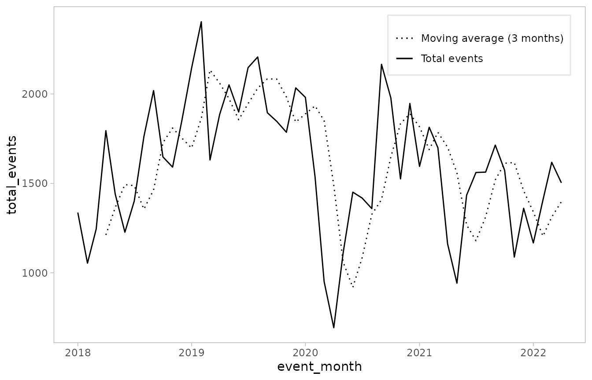

The generate_movers() function generates moving statistics of ACLED event counts. In this case, moving statistics summarize variation in event counts over some period of time. A common example would be a moving average, which would represent the average number of events over some period of time until the present observation.
The required parameters are as follows:
generate_movers(
data,
var,
unit_id,
time_id,
slide_funs,
slide_periods
)where data is event counts from ACLED, unit_id is the spatial unit of analysis (e.g., country, ADMIN1, region), time_id is the temporal unit (e.g., week, month, year), slide_funs are the requested moving statistics (e.g., mean, sd, median, min, max), and slide_periods are the number of temporal periods over which to calculate the moving statistics.
As an initial example, let’s first pull ACLED data for India since 2018 using the acled_api() function:
library(acledR)
df_india <- acled_api(email = Sys.getenv("email_address"),
key = Sys.getenv("acled_key"),
countries = "India",
start_date = "2018-01-01",
end_date = "2022-04-30",
monadic = F)Next, we can aggregate to event counts per month using the generate_counts() function:
df_india_agg <-
df_india %>%
generate_counts(.,
unit_id = "country",
time_id = "event_date",
time_target = "month")We now have a tibble of ACLED event counts by month for each event type, as well the sum across event types:
df_india_agg %>% dplyr::glimpse()
#> Rows: 52
#> Columns: 9
#> $ country <chr> "India", "India", "India", "India", "India"…
#> $ event_month <date> 2018-01-01, 2018-02-01, 2018-03-01, 2018-0…
#> $ battles <dbl> 133, 142, 86, 76, 131, 84, 81, 88, 72, 76, …
#> $ explosions_remote_violence <dbl> 45, 23, 19, 26, 39, 36, 29, 25, 14, 23, 25,…
#> $ protests <dbl> 926, 705, 885, 1279, 957, 857, 1001, 1234, …
#> $ riots <dbl> 163, 118, 184, 336, 203, 172, 203, 269, 397…
#> $ strategic_developments <dbl> 20, 15, 8, 14, 25, 16, 24, 30, 25, 20, 17, …
#> $ violence_against_civilians <dbl> 50, 51, 64, 63, 86, 63, 63, 116, 112, 106, …
#> $ total_events <dbl> 1337, 1054, 1246, 1794, 1441, 1228, 1401, 1…With these event counts, we can use generate_movers() to calculate moving statistics of these variables. Let’s create two new variables, one for the moving average of total_events over the last 3 months:
df_india_agg_movers <-
generate_movers(data = df_india_agg,
var = "total_events",
unit_id = "country",
time_id = "event_month",
slide_funs = "mean",
slide_periods = 3)We now have two new columns for the two requested moving averages: total_events_moving_mean_3. We can look at the first few rows of our variables of interest:
df_india_agg_movers %>%
dplyr::select(country,
event_month,
total_events,
total_events_moving_mean_3)
#> # A tibble: 52 × 4
#> # Groups: country [1]
#> country event_month total_events total_events_moving_mean_3
#> <chr> <date> <dbl> <dbl>
#> 1 India 2018-01-01 1337 NA
#> 2 India 2018-02-01 1054 NA
#> 3 India 2018-03-01 1246 NA
#> 4 India 2018-04-01 1794 1212.
#> 5 India 2018-05-01 1441 1365.
#> 6 India 2018-06-01 1228 1494.
#> 7 India 2018-07-01 1401 1488.
#> 8 India 2018-08-01 1762 1357.
#> 9 India 2018-09-01 2019 1464.
#> 10 India 2018-10-01 1648 1727.
#> # … with 42 more rowsNote that the first 3 months for total_events_moving_mean_3 are missing. This is because there has not been enough elapsed time in the sample to calculate a complete moving statistic of the requested temporal length. This default behavior can be turned off by setting complete = F in the generate_movers() call.
To see how this would change the returned values, consider the following:
generate_movers(data = df_india_agg,
var = "total_events",
unit_id = "country",
time_id = "event_month",
slide_funs = "mean",
slide_periods = 3,
complete = F) %>%
dplyr::select(country, event_month, total_events,
total_events_moving_mean_3)
#> # A tibble: 52 × 4
#> # Groups: country [1]
#> country event_month total_events total_events_moving_mean_3
#> <chr> <date> <dbl> <dbl>
#> 1 India 2018-01-01 1337 NaN
#> 2 India 2018-02-01 1054 1337
#> 3 India 2018-03-01 1246 1196.
#> 4 India 2018-04-01 1794 1212.
#> 5 India 2018-05-01 1441 1365.
#> 6 India 2018-06-01 1228 1494.
#> 7 India 2018-07-01 1401 1488.
#> 8 India 2018-08-01 1762 1357.
#> 9 India 2018-09-01 2019 1464.
#> 10 India 2018-10-01 1648 1727.
#> # … with 42 more rowsHere, the first period returns NaN values, while the second period simply fills the first observed value. By the fourth period, the moving averages for the default complete = T and complete = F versions are the same, as they’ve both calculated moving statistics over a 3 month period.
Sticking with the default complete = T version, we can quickly visualize the trend in event counts over time with ggplot2:
library(ggplot2)
df_india_agg_movers %>%
ggplot() +
geom_line(aes(x = event_month, y = total_events,
linetype = "Total events")) +
geom_line(aes(x = event_month, y = total_events_moving_mean_3,
linetype = "Moving average (3 months)")) +
scale_linetype_manual(values = c(3, 1),
guide = guide_legend(title = NULL)) +
theme_light() +
theme(legend.position = c(0.8, 0.885),
legend.background = element_rect(color = "gray90"),
panel.grid = element_blank())